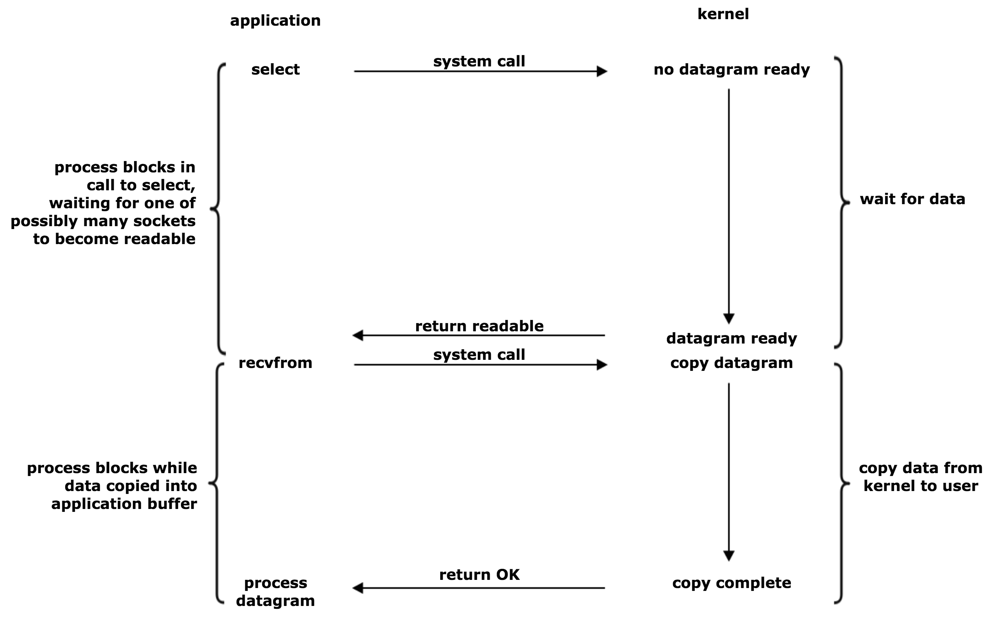

网络并发编程模型
网络并发编程模型一般包括三种:
- 多进程;
- 多线程;
- IO 多路复用
本文会着重介绍 IO 多路复用这种编程模型, 包括对 select、poll、 epoll 的介绍.
多进程和多线程并发编程模型
多进程和多线程并发编程模型都是通过新建进程或者线程去处理新的网络连接请求. 因为创建新进程的开销比要比线程高很多, 一般会使用多线程来实现并发.
如果把 golang 的协程看作是用户态线程的话, 我们可以用下面的代码来说明 多进程/多线程 编程模型:
package main |
如果是多进程并发编程模型的话, 就会用 fork 创建子进程去处理新的连接.
因为在系统中创建进程或者线程的数量是受限的, 也导致基于多进程多线程模型的并发数收到了限制.
IO 多路复用
在 Linux/Unix 系统中, 对网络进行了抽象, 一个网络连接可以用一个描述符来表示.
而 IO 多路复用就是通过某种机制, 使得一个进程或线程可以监视多个描述符, 当某个描述符就绪时, 就能通知程序进行相应的读写操作, 也就是接收或者发送网络数据.
当我们进行一次 IO 访问时, 例如 read , 一般会发生下面两个过程:
- 等待数据准备; 数据从网卡等设备拷贝到操作系统内核缓冲区;
- 将数据从内核缓冲区拷贝到进程地址空间内存;
IO 多路复用包括三种: select、poll、epoll, 它们的实现原理都是类似的:
- 先设置一些列的描述符;
- select 等函数会不断地轮询所负责的所有描述符, 当某个描述符准备好时就直接返回, 通知用户程序, 否则就阻塞;
具体如下图所示:

select 缺点
select 函数定义:
int select (int n, fd_set *readfds, fd_set *writefds, fd_set *exceptfds, struct timeval *timeout); |
- 每次调用select，都需要把fd集合从用户态拷贝到内核态，这个开销在fd很多时会很
- 同时每次调用select都需要在内核遍历传递进来的所有fd，这个开销在fd很多时也很大
- 支持的描述符数量受宏变量
FD_SETSIZE限制, 默认比较小, 32 系统下是1024, 64 位系统下是2048
poll
int poll (struct pollfd *fds, unsigned int nfds, int timeout); |
poll 本质上和 select 没有区别, 只是描述 fd 集合的方式不同, poll 使用的是 pollfd 而 select 使用的是 fd_set 方式. pollfd 底层是基于链表实现的.
poll 没有最大并发连接数的限制.
epoll 优点
int epoll_create(int size)；//创建一个epoll的句柄，size用来告诉内核这个监听的数目一共有多大 |
- 没有最大并发连接的限制，能打开的fd上限远大于1024（1G的内存上能监听约10万个端口）
- 采用回调的方式, 效率提升. 只有活跃可用的fd才会调用callback函数, 也就是说 epoll 只管 “活跃” 的连接, 而跟连接总数无关.
- 利用 mmap 文件映射内存加速与内核空间的消息传递, 避免了每次调用 select 都要进行内核态数据和用户数据的拷贝.
epoll 适用于存在大量 idle -connection 或者 dead-connection 的场景.
epoll 工作模式
epoll对文件描述符的操作有两种模式：LT（level trigger，水平触发）和ET（edge trigger，边缘触发）。二者的区别如下：
- 水平触发：默认工作模式，即当 epoll_wait 检测到某描述符事件就绪并通知应用程序时，应用程序可以不立即处理该事件；下次调用epoll_wait时，会再次通知此事件。
- 边缘触发：当epoll_wait检测到某描述符事件就绪并通知应用程序时，应用程序必须立即处理该事件。如果不处理，下次调用epoll_wait时，不会再次通知此事件。（直到你做了某些操作导致该描述符变成未就绪状态了，也就是说边缘触发只在状态由未就绪变为就绪时通知一次）
边缘触发（ET模式）在很大程度上减少了epoll事件被重复触发的次数，因此效率要比LT模式高。epoll工作在ET模式的时候，必须使用非阻塞socket，以避免由于一个文件描述符的阻塞读/阻塞写操作把处理多个文件描述符的任务饿死。
这里 有更详细的三者间的对比以及原理介绍.
References
- 本文链接：https://hiberabyss.github.io/2018/03/20/concurrency-models/
- 版权声明：本博客所有文章除特别声明外，均采用 CC BY-NC-SA 3.0 CN 许可协议。转载请注明出处！